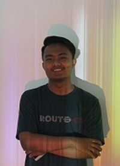

MUHAMMAD AFFANDI
Nama Panggilan : Fandi
Program Studi : Teknik Informatika
T.T.L. : Surakarta, 17 Juli 1999
Alamat rumah : TanggulRejo, Kotagajah, Lampung tengah
Hoby : Makan, Tidur, Futsal
Agama : Islam
Email : afandityo0@gmail.com
Ig : @afandi2809
Riwayat sekolah :
SD : SD N 04 Kotagajah
SMP : SMP N 2 Kotagajah
SMA : SMA N 1 Kotagajah
Cita-cita : Pengusaha
No. (HP) : 085609515XXX
Motto : Semua hal di dunia ini bisa kita dapatkan asal kita mau berusaha
Pesan/Kesan : Pergaulan tidak terbatas oleh apapun, namun aku hanya ingin memilih pergaulan yang positif.